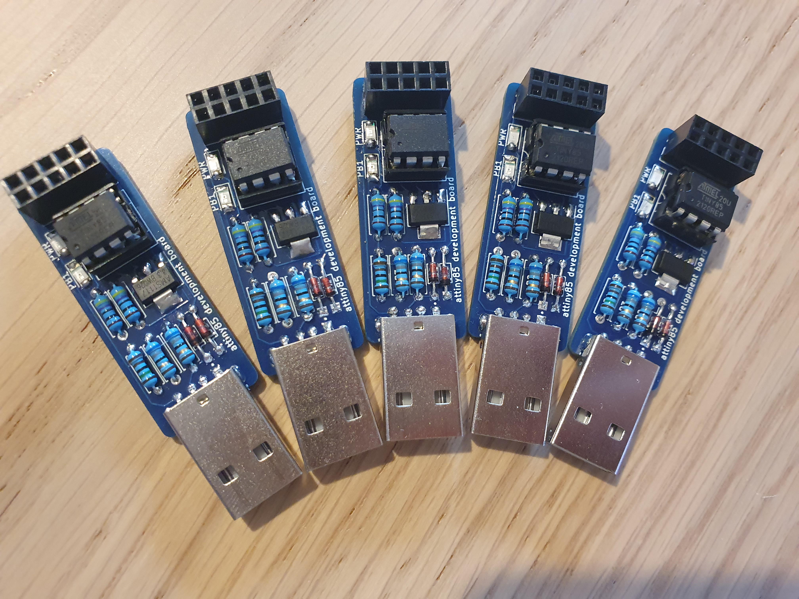

A library and a CLI tool for generating and decoding a custom matrix
barcode similar to a QR code.
An attiny85 development board with a builtin 3v3 output and power
and general purpose LEDs. Comes with USB-A.

Uses the Unicode Lower Half Block character ▄ (\u2584) combined with
VT100 escape sequences to display an image (or a video) in the
terminal. The larger the terminal window, the better the resolution
;)

Custom design of a single-key (mechanical, of course) USB keyboard
powered by an attiny85. Works great as a quick lock-screen button.